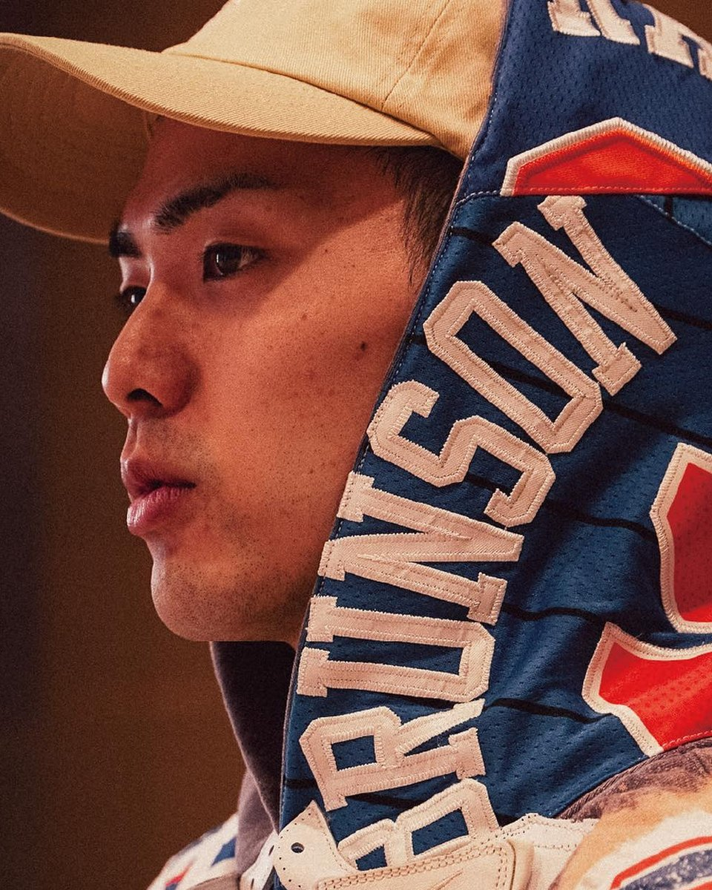

NBA JAPAN
NBA Japan 公式
NBA Japan の YouTube に上がるショート動画で、NBAの話題を届けてきた。
STARTING 5IVEMEMBER 01
NEW YORK BORN. NEW YORK RAISED.ニューヨーク生まれ・育ち。現地のNBAを日本に届けてきたYouTubeクリエイター。
YouTube
2015年、ラップで英語を教える英会話チャンネルとしてYouTubeを開始。会社員と両立しながら4年ほど続けた。
八村塁のドラフトを前に、チャンネルをNBAの発信へ100%切り替え。26歳で会社を辞めて専念した。
2018年から「Rikuto AF」。切り替えから1年〜1年半ほどで、NBA公式とも仕事をするように。
THE TIMELINE — これまでの歩み
出典: 2K Japan『NBA 2K21』発表の紹介文（ファミ通.com 2020年12月21日）、Rikuto AF の YouTube 投稿、TuneCore Japan、STARTING 5IVE「【リクト】HIPHOPとバスケを繋げる存在になりたい。」（2024年7月）。
NBA Japan の YouTube に上がるショート動画で、NBAの話題を届けてきた。
2026年3月、STARTING 5IVE で『NBA 2K26』のタイアップ動画4本を公開。コラボ実績 →
出典: STARTING 5IVE「【リクト】HIPHOPとバスケを繋げる存在になりたい。」、Rikuto AF の YouTube 投稿、ファミ通.com 2020年12月21日、STARTING 5IVE『NBA 2K26』タイアップ第1回。
NBAの発信を始めたきっかけと、ヒップホップとバスケへの想いを語った回。
バスケとNBAをコンセプトにした、ミュージックアルバムを出す。
ヒップホップ好きが、バスケに興味を持ってくれるような作品に。
出典: STARTING 5IVE「【リクト】HIPHOPとバスケを繋げる存在になりたい。」（2024年7月20日公開）
TO BE CONTINUED…
2026年、個人チャンネルの動画とSNSを一時非公開に。2027年の頭の再公開を目標にしている。
次世代機版『NBA 2K21』日本オリジナルムービー「次世代ゲームが現実を超える⁉」
2K Japan ・ 2020年12月 ・ 八村塁と対戦Rikutoさんとフリーエージェントたちについて語る!!!【リッキー&ニッキー】
ニコラス武 ・ 2019年6月【Rikuto x Bamba】Jalen Brunsonについて語り合う（前編）
Ballin' with Bamba ・ 2023年1月※ 個人チャンネルは現在非公開のため、ほかのチャンネルの出演回を再生回数順に（2026年11月時点）。
自分の道をつくってきた5人が合わされば、もっと強くなる。その考えをクリスに話したことから、STARTING 5IVE が始まった。
トレンドに乗りながら、長く続くグループに。「あの5人、ずっといるな」と言われるのが目標。
これからもバスケ、NBAの面白さを、みんなで広めていきましょう。
でHAでHA平和2024年7月のメンバー紹介回、締めの言葉
毎週のライブ配信・収録トーク、キャンプやオフ会も。STARTING 5IVE を見る →
WORK — お仕事のご依頼
現在は個人でのご依頼は受け付けておりません。
STARTING 5IVE（5人）へのご依頼はチームの相談窓口から →
オープニングの写真: Wikimedia Commons より
そのほかの写真
オープニングの効果音: 効果音ラボ「カードをめくる」（商用利用無料・クレジット表記不要／利用規約）。冒頭の音楽はこのページ用に作ったオリジナルです。